Landscape Genetic Simulations
To evaluate the NALgen method of modeling neutral and adaptive genetic variation across continuous landscapes, I first generated several landscapes, and then simulated genotypes based on the generated landscapes. In this post, I break down the simulation steps.
Color palette
library(ggsci)
#schwifty <- pal_rickandmorty()
#schwifty.cols <- colorRampPalette(schwifty(12)[c(3,12,4,6,1,9,8,2)])
#cols <- schwifty.cols(10)
futr <- pal_futurama()
futr.cols <- colorRampPalette(futr(12)[c(12,11,3,7,8,6,1,2)])
cols <- futr.cols(12)
library(scales)
#show_col(schwifty(12))
#show_col(cols)
#show_col(futr(12))
show_col(cols)
Color palette: 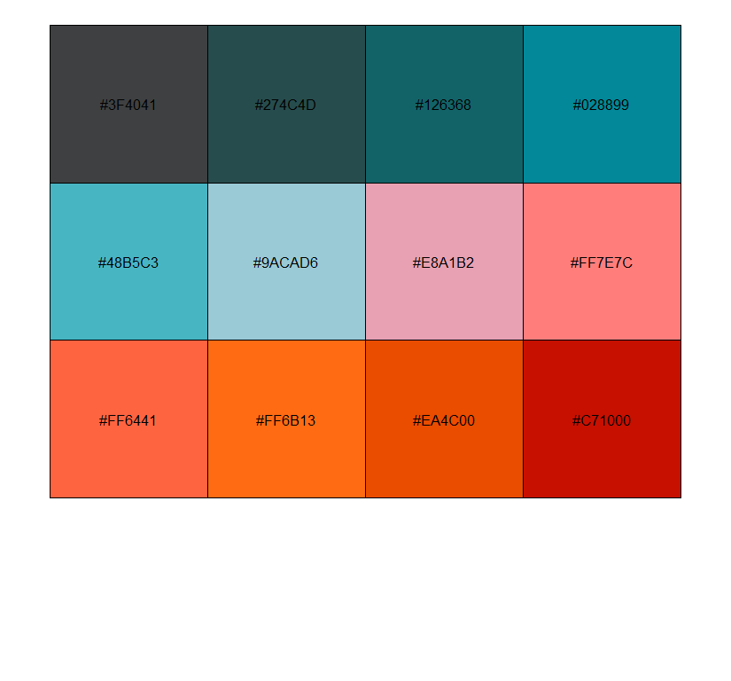
Phase I (Test): Single-locus genotypes
Generating simple (low-complexity) landscapes
landscapeR package: simulating simple landscapes (barrier and two different values of carrying capacity/habitat suitability): landscape 1 has low permeability cells (carrying capacity = 5) between habitable patches (carrying capacity = 100), while landscape 2 has high permeability cells (carrying capacity = 25), in addition to barriers (carrying capacity = 0).
library(landscapeR)
library(raster)
#consistency of results
set.seed(49137)
m <- matrix(0, 26, 34)
r <- raster(m, xmn=-91, xmx=-74, ymn=28, ymx=41)
r <- makeClass(r, 20, 20, val=1)
r <- makeClass(r, 20, 20, val=2)
r <- rmSingle(r)
lclp <- r
lclp[lclp==1] <- 100
lclp[lclp==2] <- 5
plot(lclp,breaks=seq(0,100,length.out=11),col=cols)
Low-complexity low-permeability landscape: 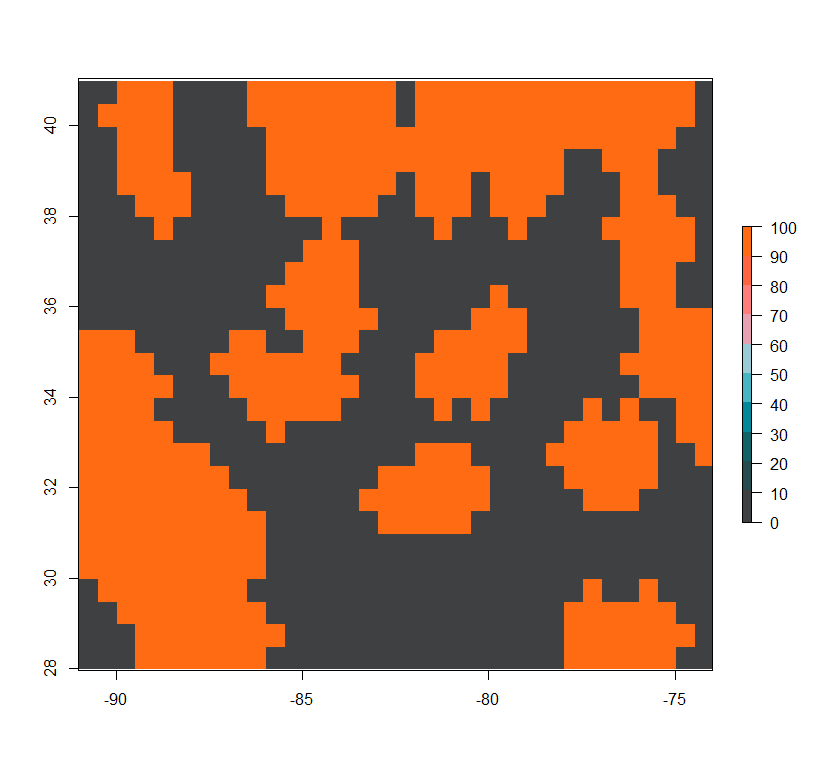
lchp <- r
lchp[lchp==2] <- 100
lchp[lchp==1] <- 25
plot(lchp,breaks=seq(0,100,length.out=11),col=cols)
Low-complexity high-permeability landscape: 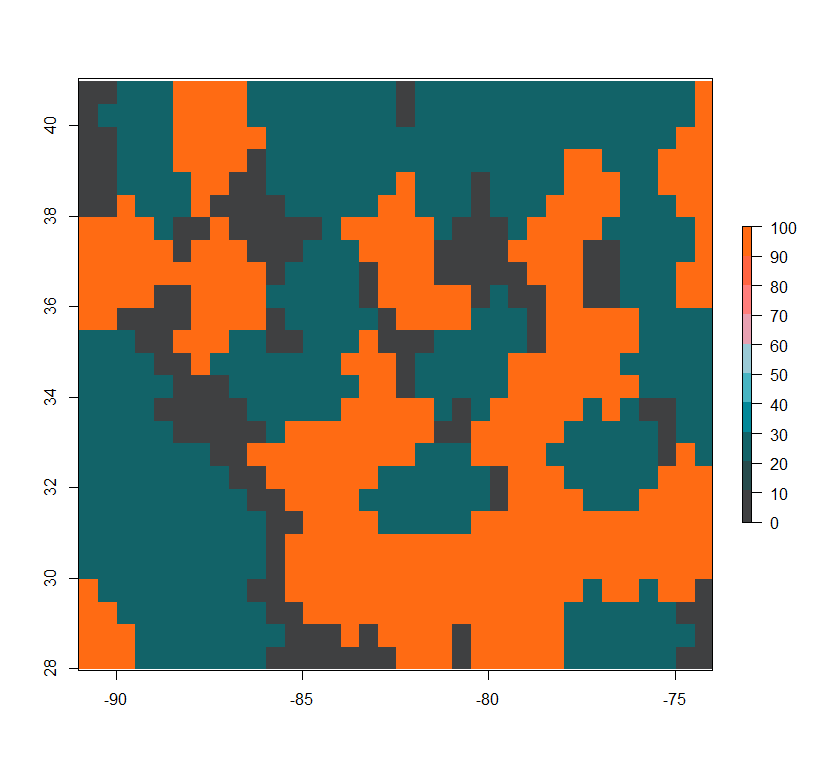
Simulation of genotypes based on simple landscapes
landsim package: simulating selected SNPs based on the landscapeR-generated landscape.
- Landscape 1: Low Complexity, Low Permeability
library(landsim)
#consistency of results
set.seed(3356737)
pop1 <- make_population(
habitat = lclp,
inaccessible.value = "NA",
uninhabitable.value = 0,
genotypes = c("aa", "aA", "AA"),
N = c(10, 10, 10)
)
migr <- migration(
kern = "gaussian",
sigma = 10,
radius = 50,
normalize = 1
)
migr1 <- setup_migration(migr, pop1)
sel <- c(1.01, 1.02, 1.03)
for (i in 1:3){
germ.vital1 <- vital(
function (N, ...) {
out <- r0 / (1 + migrate(rowSums(N),competition)/carrying.capacity)
return(cbind(aa=out, aA=s*out, AA=s^2*out))
},
r0 = 0.1,
s = sel[i], # multiplicative selective benefit of the A allele
carrying.capacity = values(pop1$habitat)[pop1$habitable],
competition = migr
)
germ.vital1 <- setup_vital(germ.vital1, pop1)
demog1 <- demography(
prob.seed = 0.2,
fecundity = 80,
prob.germination = germ.vital1,
prob.survival = 0.8,
seed.migration = migr,
pollen.migration = migr,
genotypes = c("aa", "aA", "AA")
)
demog1 <- setup_demography(demog1, pop1)
plot.times <- seq(0, 1000, length.out=6)
sim1 <- simulate_pop(pop1, demog1, times = plot.times,
carrying.capacity = values(pop1$habitat)[pop1$habitable],
summaries = list(totals=function(N){colSums(N)}))
matplot(sim1$summaries[["totals"]], type='l', xlab='time', ylab='numbers', lty=1,
main=paste("selection coefficient =", sel[i]-1))
legend("topright", lty=1, col=1:3, legend=colnames(sim1$summaries[["totals"]]))
}
- Landscape 2: Low Complexity, High Permeability
library(landsim)
#consistency of results
set.seed(635137)
pop2 <- make_population(
habitat = lchp,
inaccessible.value = "NA",
uninhabitable.value = 0,
genotypes = c("aa", "aA", "AA"),
N = c(10, 10, 10)
)
migr <- migration(
kern = "gaussian",
sigma = 10,
radius = 50,
normalize = 1
)
migr2 <- setup_migration(migr, pop2)
sel <- c(1.01, 1.02, 1.03)
for (i in 1:3){
germ.vital2 <- vital(
function (N, ...) {
out <- r0 / (1 + migrate(rowSums(N),competition)/carrying.capacity)
return(cbind(aa=out, aA=s*out, AA=s^2*out))
},
r0 = 0.1,
s = sel[i], # multiplicative selective benefit of the A allele
carrying.capacity = values(pop2$habitat)[pop2$habitable],
competition = migr
)
germ.vital2 <- setup_vital(germ.vital2, pop2)
demog2 <- demography(
prob.seed = 0.2,
fecundity = 80,
prob.germination = germ.vital2,
prob.survival = 0.8,
seed.migration = migr,
pollen.migration = migr,
genotypes = c("aa", "aA", "AA")
)
demog2 <- setup_demography(demog2, pop2)
plot.times <- seq(0, 1000, length.out=6)
sim2 <- simulate_pop(pop2, demog2, times = plot.times,
carrying.capacity = values(pop2$habitat)[pop2$habitable],
summaries = list(totals=function(N){colSums(N)}))
matplot(sim2$summaries[["totals"]], type='l', xlab='time', ylab='numbers', lty=1,
main=paste("selection coefficient =", sel[i]-1))
legend("topright", lty=1, col=1:3, legend=colnames(sim2$summaries[["totals"]]))
}
Phase II: Multi-locus genotypes
Generating simple (low-complexity) landscapes
landscapeR package: simulating simple landscapes (barrier and two different values of carrying capacity/habitat suitability): landscape 1 has low permeability cells (carrying capacity = 5) between habitable patches (carrying capacity = 100), while landscape 2 has high permeability cells (carrying capacity = 25), in addition to barriers (carrying capacity = 0).
library(landscapeR)
library(raster)
#same seed = same landscapes as above
set.seed(49137)
m <- matrix(0, 26, 34)
r <- raster(m, xmn=-91, xmx=-74, ymn=28, ymx=41)
r <- makeClass(r, 20, 20, val=1)
r <- makeClass(r, 20, 20, val=2)
r <- rmSingle(r)
lclp <- r
lclp[lclp==1] <- 100
lclp[lclp==2] <- 5
plot(lclp,breaks=seq(0,100,length.out=11),col=cols)
Low-complexity low-permeability landscape:

lchp <- r
lchp[lchp==2] <- 100
lchp[lchp==1] <- 25
plot(lchp,breaks=seq(0,100,length.out=11),col=cols)
Low-complexity high-permeability landscape:

Simulation of genotypes based on simple landscapes
popRange package: simulating 50 selected and 500 neutral SNPs based on the landscapeR-generated landscape.
library(popRange)
#consistency of results
set.seed(6531841)
barrier <- lchp
barrier[barrier<1] <- -1
barrier[barrier>1] <- 1
#plot(lclp,breaks=seq(minValue(lclp),maxValue(lclp),length.out=11),col=cols)
#plot(lchp,breaks=seq(minValue(lchp),maxValue(lchp),length.out=11),col=cols)
#plot(barrier,breaks=seq(minValue(barrier),maxValue(barrier),length.out=11),col=cols)
lclp.Sel <- lclp
lclp.Sel[lclp.Sel<11] <- 0
lclp.Sel[lclp.Sel>10] <- 0.01
lclp.Sel.df <- cbind(rep(1,nrow(lclp.Sel)*ncol(lclp.Sel)),
rep(50,nrow(lclp.Sel)*ncol(lclp.Sel)),
as.data.frame(lclp.Sel),
coordinates(lclp.Sel)-0.5)
colnames(lclp.Sel.df) <- c("sSNP","fSNP","s","x","y")
lchp.Sel <- lchp
lchp.Sel[lchp.Sel<11] <- 0
lchp.Sel[lchp.Sel>10] <- 0.01
lchp.Sel.df <- cbind(rep(1,nrow(lchp.Sel)*ncol(lchp.Sel)),
rep(50,nrow(lchp.Sel)*ncol(lchp.Sel)),
as.data.frame(lchp.Sel),
coordinates(lchp.Sel)-0.5)
colnames(lchp.Sel.df) <- c("sSNP","fSNP","s","x","y")
s.coords=c()
for(i in 1:26) s.coords <- c(s.coords, paste0(seq(0,25)[i], seq(0,33)))
s.coeffs <- c()
for (i in 1:26) s.coeffs <- c(s.coeffs, as.matrix(lclp.Sel)[i,])
sDiff.lclp <- rbind(c(1,50,s.coeffs),
c(51,550,rep(0,884)))
s.coords=c()
for(i in 1:26) s.coords <- c(s.coords, paste0(seq(0,25)[i], seq(0,33)))
s.coeffs <- c()
for (i in 1:26) s.coeffs <- c(s.coeffs, as.matrix(lchp.Sel)[i,])
sDiff.lchp <- rbind(c(1,50,s.coeffs),
c(51,550,rep(0,884)))
#folders where simulations will go
m0.1_lclp <- "C:/Users/chazh/Documents/Research Projects/Reticulitermes/Simulations/popRange/m_0_1/Simulated_Landscapes/500neutral+50selectedSNPs/Low_Complexity_Landscapes/landscapeR/Low_Permeability"
m0.5_lclp <- "C:/Users/chazh/Documents/Research Projects/Reticulitermes/Simulations/popRange/m_0_5/Simulated_Landscapes/500neutral+50selectedSNPs/Low_Complexity_Landscapes/landscapeR/Low_Permeability"
m0.1_lchp <- "C:/Users/chazh/Documents/Research Projects/Reticulitermes/Simulations/popRange/m_0_1/Simulated_Landscapes/500neutral+50selectedSNPs/Low_Complexity_Landscapes/landscapeR/High_Permeability"
m0.5_lchp <- "C:/Users/chazh/Documents/Research Projects/Reticulitermes/Simulations/popRange/m_0_5/Simulated_Landscapes/500neutral+50selectedSNPs/Low_Complexity_Landscapes/landscapeR/High_Permeability"
setwd(m0.1_lclp)
popRangeSim(world=as.matrix(barrier), popSize=20, K=as.matrix(lclp),
diploid=TRUE, nGens=1000, mig=0.1,
#gamma_shape=0.2, gamma_scale=1,
#SNP_model=1, gSize=1*10^9, mutRate=1*10^-8,
SNP_model=0, nSNPs=550, SNPs_starting_freq=0.5,
#rMean=0.5, rVar=0.5,
s=matrix(c(1,51,50,550,0.01,0),nrow=2,ncol=3),
#sDiff=sDiff.lclp,
#had to modify config.py float(catProb) instead of int(catProb)
catProb=0.0001,
outfile="lclp", GENEPOP=TRUE)
writeRaster(lclp, "lclp.asc", overwrite=TRUE)
setwd(m0.1_lchp)
popRangeSim(world=as.matrix(barrier), popSize=20, K=as.matrix(lchp),
diploid=TRUE, nGens=1000, mig=0.1,
#gamma_shape=0.2, gamma_scale=1,
#SNP_model=1, gSize=1*10^9, mutRate=1*10^-8,
SNP_model=0, nSNPs=550, SNPs_starting_freq=0.5,
#rMean=0.5, rVar=0.5,
s=matrix(c(1,51,50,550,0.01,0),nrow=2,ncol=3),
#sDiff=sDiff.lchp,
#had to modify config.py float(catProb) instead of int(catProb)
catProb=0.0001,
outfile="lchp", GENEPOP=TRUE)
writeRaster(lchp, "lchp.asc", overwrite=TRUE)
setwd(m0.5_lclp)
popRangeSim(world=as.matrix(barrier), popSize=20, K=as.matrix(lclp),
diploid=TRUE, nGens=1000, mig=0.5,
#gamma_shape=0.2, gamma_scale=1,
#SNP_model=1, gSize=1*10^9, mutRate=1*10^-8,
SNP_model=0, nSNPs=550, SNPs_starting_freq=0.5,
#rMean=0.5, rVar=0.5,
s=matrix(c(1,51,50,550,0.01,0),nrow=2,ncol=3),
#sDiff=sDiff.lclp,
#had to modify config.py float(catProb) instead of int(catProb)
catProb=0.0001,
outfile="lclp", GENEPOP=TRUE)
writeRaster(lclp, "lclp.asc", overwrite=TRUE)
setwd(m0.5_lchp)
popRangeSim(world=as.matrix(barrier), popSize=20, K=as.matrix(lchp),
diploid=TRUE, nGens=1000, mig=0.5,
#gamma_shape=0.2, gamma_scale=1,
#SNP_model=1, gSize=1*10^9, mutRate=1*10^-8,
SNP_model=0, nSNPs=550, SNPs_starting_freq=0.5,
#rMean=0.5, rVar=0.5,
s=matrix(c(1,51,50,550,0.01,0),nrow=2,ncol=3),
#sDiff=sDiff.lchp,
#had to modify config.py float(catProb) instead of int(catProb)
catProb=0.0001,
outfile="lchp", GENEPOP=TRUE)
writeRaster(lchp, "lchp.asc", overwrite=TRUE)
Simulation of genotypes on complex landscapes generated based on Bioclim data
virtualspecies package: landscape generation based on Bioclim data:
To generate distributions:
1. collinearity removed from climatic variables,
2. PCA of remaining variables performed,
3. ranges of PCA values specified (for three metapopulations).
library(raster)
library(virtualspecies)
#consistency of results
set.seed(946516341)
setwd("C:/Users/chazh/Documents/Research Projects/Reticulitermes/Phylogeography/Geo_Analysis/Data/EnvData/bioclim/east coast/current")
fn <- list.files(pattern=".asc")
stk <- stack()
for(i in 1:length(fn)) stk <- addLayer(stk,raster(fn[i]))
nampres <- sub(pattern="Ecoast",replacement="",names(stk))
nampres <- sub(pattern="_",replacement="",nampres)
nampres <- sub(pattern="_",replacement="",nampres)
names(stk) <- nampres
stk60 <- aggregate(stk,60)
rc_stk60 <- removeCollinearity(stk60, select.variables = TRUE, plot = TRUE, multicollinearity.cutoff = 0.5)
Selecting non-collinear bioclimatic variables

#plot parameters
par(mfrow=c(1,1),fg="gray50",pty='m',bty='o',mar=c(4,4,4,4),cex.main=1.3,cex.axis=1.1,cex.lab=1.2)
##Low Permeability##
PCA_distrib_N <- generateSpFromPCA(raster.stack=stk60[[rc_stk60]], axes=c(1:2), sample.points=TRUE, nb.points=850, means=c(3.5,2.5), sds=c(1,1), plot=FALSE)
PCA_distrib_C <- generateSpFromPCA(raster.stack=stk60[[rc_stk60]], axes=c(1:2), sample.points=TRUE, nb.points=850, means=c(0,-2.2), sds=c(1,1), plot=FALSE)
PCA_distrib_S <- generateSpFromPCA(raster.stack=stk60[[rc_stk60]], axes=c(1:2), sample.points=TRUE, nb.points=850, means=c(-2.5,2.5), sds=c(1,1), plot=FALSE)
spN <- convertToPA(PCA_distrib_N, species.prevalence=NULL, alpha=-0.002, beta=0.2)
Occurrence probability of metapopulation 1 (out of 3): 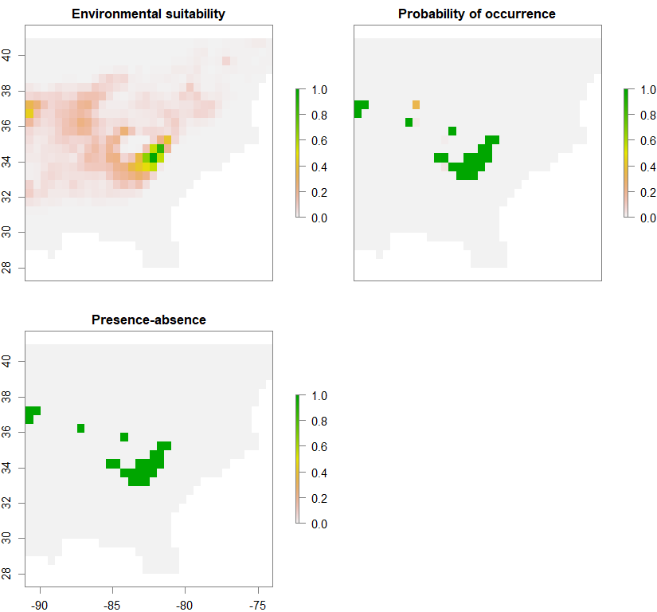
spC <- convertToPA(PCA_distrib_C, species.prevalence=NULL, alpha=-0.002, beta=0.2)
Occurrence probability of metapopulation 2 (out of 3): 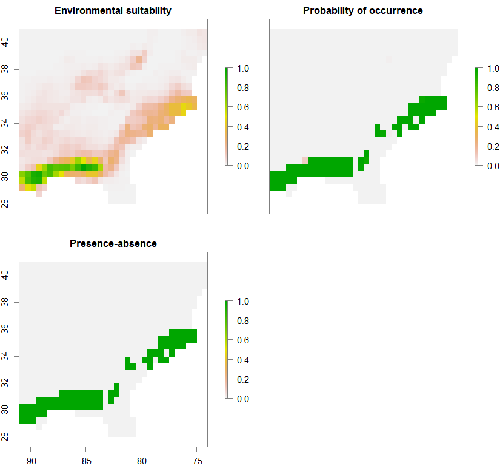
spS <- convertToPA(PCA_distrib_S, species.prevalence=NULL, alpha=-0.002, beta=0.2)
Occurrence probability of metapopulation 3 (out of 3): 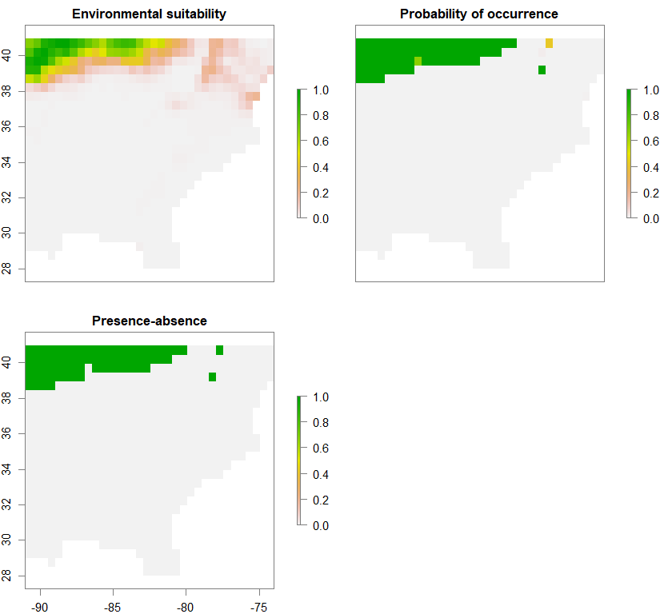
pop3.complex.lowperm.PA <- 1*spN$pa.raster + 2*spC$pa.raster + 3*spS$pa.raster
pop3.complex.lowperm.PA <- round(pop3.complex.lowperm.PA, 0)
pop3.complex.lowperm.PA[pop3.complex.lowperm.PA>3] <- 0
pop3.complex.lowperm.PA[is.na(pop3.complex.lowperm.PA)] <- 0
spN$suitab.raster[spN$suitab.raster<0.25] <- 0
spC$suitab.raster[spC$suitab.raster<0.25] <- 0
spS$suitab.raster[spS$suitab.raster<0.25] <- 0
spN_suitab <- 100*spN$pa.raster*spN$suitab.raster
spC_suitab <- 100*spC$pa.raster*spC$suitab.raster
spS_suitab <- 100*spS$pa.raster*spS$suitab.raster
pop3.complex.lowperm.Suitab <- spN_suitab + spC_suitab + spS_suitab
pop3.complex.lowperm.Suitab[pop3.complex.lowperm.Suitab>100] <- 100
pop3.complex.lowperm.Suitab[is.na(pop3.complex.lowperm.Suitab)] <- 0
pop3.complex.lowperm.Suitab[pop3.complex.lowperm.Suitab<5] <- 0
pop3.complex.lowperm.Suitab <- round(pop3.complex.lowperm.Suitab,0)
plot(pop3.complex.lowperm.Suitab,
breaks=seq(minValue(pop3.complex.lowperm.Suitab),maxValue(pop3.complex.lowperm.Suitab),length.out=11),
col=cols)
Putting the three metapopulations together: High-complexity low-permeability landscape: 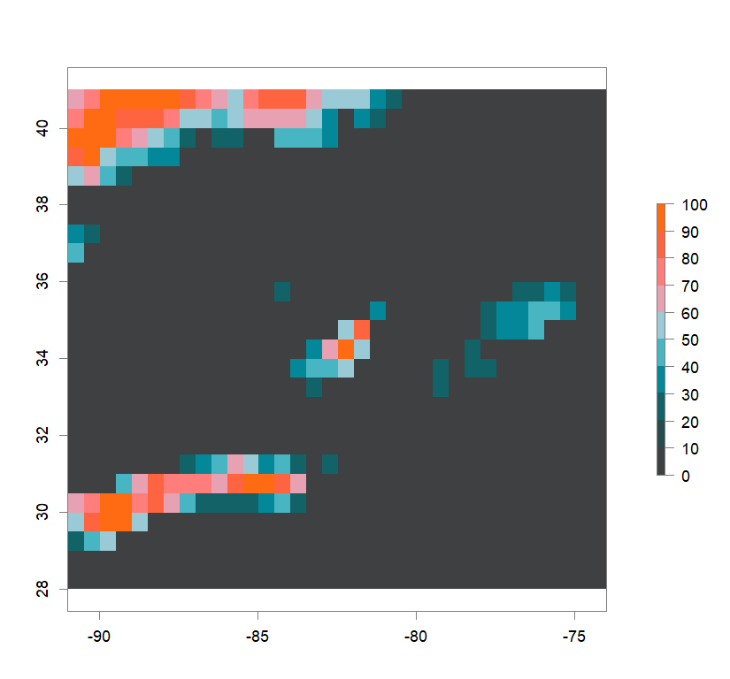
pop3.complex.lowperm.Barrier <- pop3.complex.lowperm.Suitab
pop3.complex.lowperm.Barrier[pop3.complex.lowperm.Suitab>24] <- 1
pop3.complex.lowperm.Barrier[pop3.complex.lowperm.Suitab<25] <- -1
pop3.complex.lowperm.catProb <- pop3.complex.lowperm.Barrier
pop3.complex.lowperm.catProb[pop3.complex.lowperm.catProb==-1] <- 1
pop3.complex.lowperm.catProb[pop3.complex.lowperm.catProb==1] <- 0.0001
pop3.complex.lowperm.Sel <- pop3.complex.lowperm.PA
pop3.complex.lowperm.Sel[pop3.complex.lowperm.Sel==1] <- 0.01
pop3.complex.lowperm.Sel[pop3.complex.lowperm.Sel==2] <- 0.02
pop3.complex.lowperm.Sel[pop3.complex.lowperm.Sel==3] <- 0.03
pop3.complex.lowperm.Sel.df <- cbind(rep(1,nrow(pop3.complex.lowperm.Sel)*ncol(pop3.complex.lowperm.Sel)),
rep(50,nrow(pop3.complex.lowperm.Sel)*ncol(pop3.complex.lowperm.Sel)),
as.data.frame(pop3.complex.lowperm.Sel),
coordinates(pop3.complex.lowperm.Sel))
colnames(pop3.complex.lowperm.Sel.df)=c("start","end","s","x","y")
##High Permeability##
PCA_distrib_N <- generateSpFromPCA(raster.stack=stk60[[rc_stk60]], axes=c(1:2), sample.points=TRUE, nb.points=850, means=c(2.5,1), sds=c(1.2,1.2), plot=FALSE)
PCA_distrib_C <- generateSpFromPCA(raster.stack=stk60[[rc_stk60]], axes=c(1:2), sample.points=TRUE, nb.points=850, means=c(-0.5,-0.5), sds=c(1.2,1.2), plot=FALSE)
PCA_distrib_S <- generateSpFromPCA(raster.stack=stk60[[rc_stk60]], axes=c(1:2), sample.points=TRUE, nb.points=850, means=c(-2.5,2), sds=c(1.2,1.2), plot=FALSE)
spN <- convertToPA(PCA_distrib_N, species.prevalence=NULL, alpha=-0.004, beta=0.4)
Occurrence probability of metapopulation 1 (out of 3): 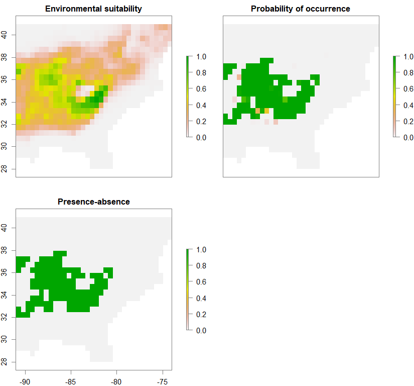
spC <- convertToPA(PCA_distrib_C, species.prevalence=NULL, alpha=-0.004, beta=0.4)
Occurrence probability of metapopulation 2 (out of 3): 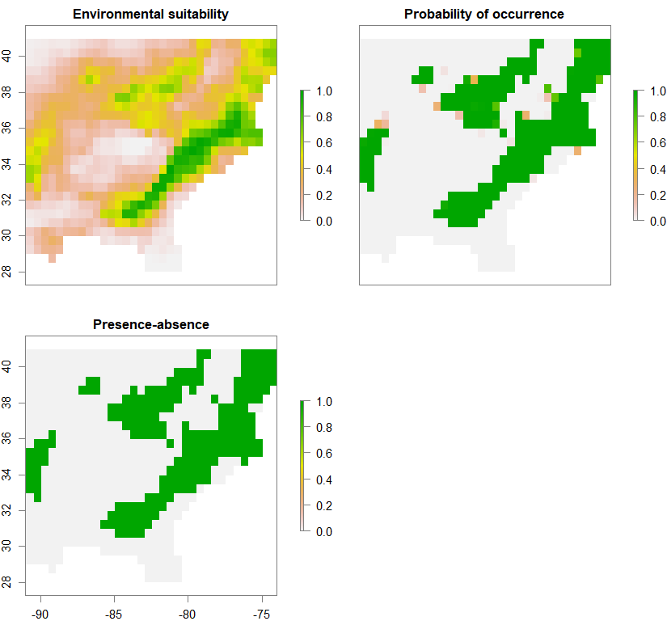
spS <- convertToPA(PCA_distrib_S, species.prevalence=NULL, alpha=-0.004, beta=0.4)
Occurrence probability of metapopulation 3 (out of 3): 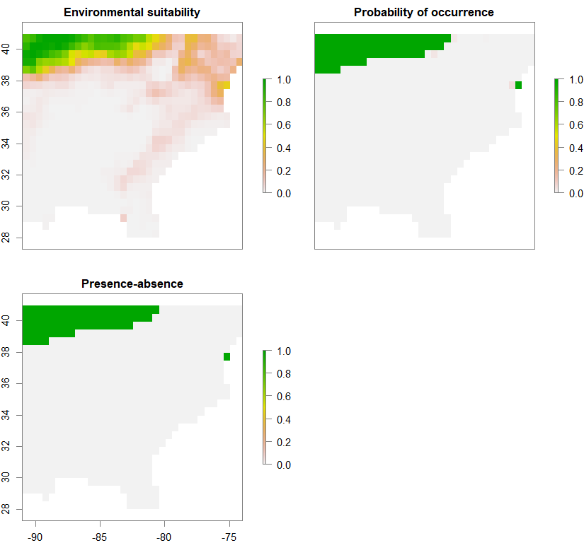
pop3.complex.highperm.PA <- 1*spN$pa.raster + 2*spC$pa.raster + 3*spS$pa.raster
pop3.complex.highperm.PA <- round(pop3.complex.highperm.PA, 0)
pop3.complex.highperm.PA[pop3.complex.highperm.PA>3] <- 0
pop3.complex.highperm.PA[is.na(pop3.complex.highperm.PA)] <- 0
spN$suitab.raster[spN$suitab.raster<0.25] <- 0
spC$suitab.raster[spC$suitab.raster<0.25] <- 0
spS$suitab.raster[spS$suitab.raster<0.25] <- 0
spN_suitab <- 100*spN$pa.raster*spN$suitab.raster
spC_suitab <- 100*spC$pa.raster*spC$suitab.raster
spS_suitab <- 100*spS$pa.raster*spS$suitab.raster
pop3.complex.highperm.Suitab <- spN_suitab + spC_suitab + spS_suitab
pop3.complex.highperm.Suitab[pop3.complex.highperm.Suitab>100] <- 100
pop3.complex.highperm.Suitab[is.na(pop3.complex.highperm.Suitab)] <- 0
pop3.complex.highperm.Suitab[pop3.complex.highperm.Suitab<5] <- 0
pop3.complex.highperm.Suitab <- round(pop3.complex.highperm.Suitab,0)
plot(pop3.complex.highperm.Suitab,
breaks=seq(minValue(pop3.complex.highperm.Suitab),maxValue(pop3.complex.highperm.Suitab),length.out=11),
col=cols)
Putting the three metapopulations together: High-complexity high-permeability landscape: 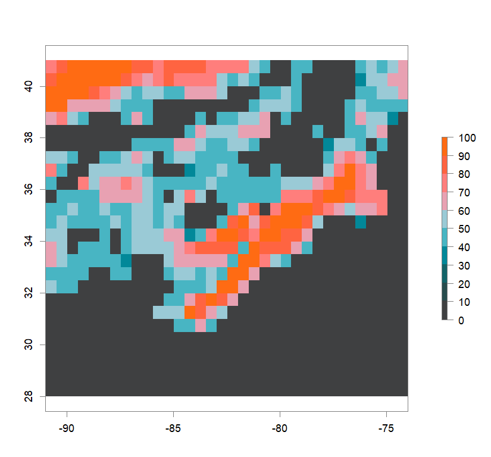
pop3.complex.highperm.Barrier <- pop3.complex.highperm.Suitab
pop3.complex.highperm.Barrier[pop3.complex.highperm.Suitab>24] <- 1
pop3.complex.highperm.Barrier[pop3.complex.highperm.Suitab<25] <- -1
pop3.complex.highperm.catProb <- pop3.complex.highperm.Barrier
pop3.complex.highperm.catProb[pop3.complex.highperm.catProb==-1] <- 1
pop3.complex.highperm.catProb[pop3.complex.highperm.catProb==1] <- 0.0001 #see catProb value for popRange sims
pop3.complex.highperm.Sel <- pop3.complex.highperm.PA
pop3.complex.highperm.Sel[pop3.complex.highperm.Sel==1] <- 0.01
pop3.complex.highperm.Sel[pop3.complex.highperm.Sel==2] <- 0.02
pop3.complex.highperm.Sel[pop3.complex.highperm.Sel==3] <- 0.03
pop3.complex.highperm.Sel.df <- cbind(rep(1,nrow(pop3.complex.highperm.Sel)*ncol(pop3.complex.highperm.Sel)),
rep(50,nrow(pop3.complex.highperm.Sel)*ncol(pop3.complex.highperm.Sel)),
as.data.frame(pop3.complex.highperm.Sel),
coordinates(pop3.complex.highperm.Sel))
colnames(pop3.complex.highperm.Sel.df)=c("start","end","s","x","y")
popRange package: simulating 50 selected and 500 neutral SNPs based on the virtualspecies-generated landscape.
library(popRange)
#consistency of results
set.seed(36813911)
hclp <- pop3.complex.lowperm.Suitab
barrier.hclp <- pop3.complex.lowperm.Barrier
hchp <- pop3.complex.highperm.Suitab
barrier.hchp <- pop3.complex.highperm.Barrier
#folders where simulations will go
m0.1_hclp <- "C:/Users/chazh/Documents/Research Projects/Reticulitermes/Simulations/popRange/m_0_1/Simulated_Landscapes/500neutral+50selectedSNPs/High_Complexity_Landscapes/virtualspecies/Low_Permeability"
m0.5_hclp <- "C:/Users/chazh/Documents/Research Projects/Reticulitermes/Simulations/popRange/m_0_5/Simulated_Landscapes/500neutral+50selectedSNPs/High_Complexity_Landscapes/virtualspecies/Low_Permeability"
m0.1_hchp <- "C:/Users/chazh/Documents/Research Projects/Reticulitermes/Simulations/popRange/m_0_1/Simulated_Landscapes/500neutral+50selectedSNPs/High_Complexity_Landscapes/virtualspecies/High_Permeability"
m0.5_hchp <- "C:/Users/chazh/Documents/Research Projects/Reticulitermes/Simulations/popRange/m_0_5/Simulated_Landscapes/500neutral+50selectedSNPs/High_Complexity_Landscapes/virtualspecies/High_Permeability"
hclp.Sel <- pop3.complex.lowperm.Sel
s.coords=c()
for(i in 1:26) s.coords <- c(s.coords, paste0(seq(0,25)[i], seq(0,33)))
s.coeffs <- c()
for (i in 1:26) s.coeffs <- c(s.coeffs, as.matrix(hclp.Sel)[i,])
sDiff.hclp <- rbind(c(1,50,s.coeffs),
c(51,550,rep(0,884)))
hchp.Sel <- pop3.complex.highperm.Sel
s.coords=c()
for(i in 1:26) s.coords <- c(s.coords, paste0(seq(0,25)[i], seq(0,33)))
s.coeffs <- c()
for (i in 1:26) s.coeffs <- c(s.coeffs, as.matrix(hchp.Sel)[i,])
sDiff.hchp <- rbind(c(1,50,s.coeffs),
c(51,550,rep(0,884)))
setwd(m0.1_hclp)
popRangeSim(world=as.matrix(barrier.hclp), popSize=20, K=as.matrix(hclp),
diploid=TRUE, nGens=1000, mig=0.1,
#gamma_shape=0.2, gamma_scale=1,
#SNP_model=1, gSize=1*10^9, mutRate=1*10^-8,
SNP_model=0, nSNPs=550, SNPs_starting_freq=0.5,
#rMean=0.5, rVar=0.5,
s=matrix(c(1,51,50,550,0.01,0),nrow=2,ncol=3),
#sDiff=sDiff.hclp,
#had to modify config.py float(catProb) instead of int(catProb)
catProb=0.0001,
outfile="hclp", GENEPOP=TRUE)
writeRaster(hclp, "hclp.asc", overwrite=TRUE)
setwd(m0.1_hchp)
popRangeSim(world=as.matrix(barrier.hchp), popSize=20, K=as.matrix(hchp),
diploid=TRUE, nGens=1000, mig=0.1,
#gamma_shape=0.2, gamma_scale=1,
#SNP_model=1, gSize=1*10^9, mutRate=1*10^-8,
SNP_model=0, nSNPs=550, SNPs_starting_freq=0.5,
#rMean=0.5, rVar=0.5,
s=matrix(c(1,51,50,550,0.01,0),nrow=2,ncol=3),
#sDiff=sDiff.hchp,
#had to modify config.py float(catProb) instead of int(catProb)
catProb=0.0001,
outfile="hchp", GENEPOP=TRUE)
writeRaster(hchp, "hchp.asc", overwrite=TRUE)
setwd(m0.5_hclp)
popRangeSim(world=as.matrix(barrier.hclp), popSize=20, K=as.matrix(hclp),
diploid=TRUE, nGens=1000, mig=0.5,
#gamma_shape=0.2, gamma_scale=1,
#SNP_model=1, gSize=1*10^9, mutRate=1*10^-8,
SNP_model=0, nSNPs=550, SNPs_starting_freq=0.5,
#rMean=0.5, rVar=0.5,
s=matrix(c(1,51,50,550,0.01,0),nrow=2,ncol=3),
#sDiff=sDiff.hclp,
#had to modify config.py float(catProb) instead of int(catProb)
catProb=0.0001,
outfile="hclp", GENEPOP=TRUE)
writeRaster(hclp, "hclp.asc", overwrite=TRUE)
setwd(m0.5_hchp)
popRangeSim(world=as.matrix(barrier.hchp), popSize=20, K=as.matrix(hchp),
diploid=TRUE, nGens=1000, mig=0.5,
#gamma_shape=0.2, gamma_scale=1,
#SNP_model=1, gSize=1*10^9, mutRate=1*10^-8,
SNP_model=0, nSNPs=550, SNPs_starting_freq=0.5,
#rMean=0.5, rVar=0.5,
s=matrix(c(1,51,50,550,0.01,0),nrow=2,ncol=3),
#sDiff=sDiff.hchp,
#had to modify config.py float(catProb) instead of int(catProb)
catProb=0.0001,
outfile="hchp", GENEPOP=TRUE)
writeRaster(hchp, "hchp.asc", overwrite=TRUE)
Data for further analysis
Subsets of simulated genotypes
library(adegenet)
library(poppr)
library(zvau)
m0.1_n <- "C:/Users/chazh/Documents/Research Projects/Reticulitermes/Simulations/popRange/m_0_1/Simulated_Genotypes/20pop_subsets/neutral_only"
m0.1_n.s <- "C:/Users/chazh/Documents/Research Projects/Reticulitermes/Simulations/popRange/m_0_1/Simulated_Genotypes/20pop_subsets/neutral+selected"
m0.1_s <- "C:/Users/chazh/Documents/Research Projects/Reticulitermes/Simulations/popRange/m_0_1/Simulated_Genotypes/20pop_subsets/selected_only"
m0.5_n <- "C:/Users/chazh/Documents/Research Projects/Reticulitermes/Simulations/popRange/m_0_5/Simulated_Genotypes/20pop_subsets/neutral_only"
m0.5_n.s <- "C:/Users/chazh/Documents/Research Projects/Reticulitermes/Simulations/popRange/m_0_5/Simulated_Genotypes/20pop_subsets/neutral+selected"
m0.5_s <- "C:/Users/chazh/Documents/Research Projects/Reticulitermes/Simulations/popRange/m_0_5/Simulated_Genotypes/20pop_subsets/selected_only"
setwd(m0.1_lclp)
#delete duplicate "Loc1" line
writeLines(readLines("lclp.GENEPOP.gen1000")[-2],"lclp.GENEPOP.gen")
writeLines(readLines("lclp.GENEPOP.PopCoor.gen1000"),"lclp.GENEPOP.PopCoor.txt")
lclp_file <- read.genepop(paste0(lclp,"lclp.GENEPOP.gen"))
lclp_file@other <- read.table(paste0(lclp,"lclp.GENEPOP.PopCoor.txt"), sep=" ",header=F)
colnames(lclp_file@other)=c("x","y")
rand.subset.20pops.lclp <- popsub(lclp_file, sublist=sample(popNames(lclp_file),20))
rand.subset.20pops.lclp.neutrloc <- df2genind(genind2df(rand.subset.20pops.lclp)[,52:551],pop=genind2df(rand.subset.20pops.lclp)[,1],ncode=2)
rand.subset.20pops.lclp.selloc <- df2genind(genind2df(rand.subset.20pops.lclp)[,2:51],pop=genind2df(rand.subset.20pops.lclp)[,1],ncode=2)
setwd(m0.1_n.s)
writeGenPop(rand.subset.20pops.lclp,"lclp_20pops.gen",
comment="Low Complexity Low Permeability - 20 pops - Simulated Genotypes")
write.table(cbind(rand.subset.20pops.lclp@other$x,rand.subset.20pops.lclp@other$y),"lclp_20pops_coords.txt", row.names=FALSE, col.names=FALSE)
setwd(m0.1_n)
writeGenPop(rand.subset.20pops.lclp.neutrloc,"lclp_only-neutr_20pops.gen",
comment="Low Complexity Low Permeability - Only Neutral Loci - 20 pops - Simulated Genotypes")
write.table(cbind(rand.subset.20pops.lclp@other$x,rand.subset.20pops.lclp@other$y),"lclp_20pops_coords.txt", row.names=FALSE, col.names=FALSE)
setwd(m0.1_s)
writeGenPop(rand.subset.20pops.lclp.selloc,"lclp_only-sel_20pops.gen",
comment="Low Complexity Low Permeability - Only Selected Loci - 20 pops - Simulated Genotypes")
write.table(cbind(rand.subset.20pops.lclp@other$x,rand.subset.20pops.lclp@other$y),"lclp_20pops_coords.txt", row.names=FALSE, col.names=FALSE)
setwd(m0.1_lchp)
#delete duplicate "Loc1" line
writeLines(readLines("lchp.GENEPOP.gen1000")[-2],"lchp.GENEPOP.gen")
writeLines(readLines("lchp.GENEPOP.PopCoor.gen1000"),"lchp.GENEPOP.PopCoor.txt")
lchp_file <- read.genepop(paste0(lchp,"lchp.GENEPOP.gen"))
lchp_file@other <- read.table(paste0(lchp,"lchp.GENEPOP.PopCoor.txt"), sep=" ",header=F)
colnames(lchp_file@other)=c("x","y")
rand.subset.20pops.lchp <- popsub(lchp_file, sublist=sample(popNames(lchp_file),20))
rand.subset.20pops.lchp.neutrloc <- df2genind(genind2df(rand.subset.20pops.lchp)[,52:551],pop=genind2df(rand.subset.20pops.lchp)[,1],ncode=2)
rand.subset.20pops.lchp.selloc <- df2genind(genind2df(rand.subset.20pops.lchp)[,2:51],pop=genind2df(rand.subset.20pops.lchp)[,1],ncode=2)
setwd(m0.1_n.s)
writeGenPop(rand.subset.20pops.lchp,"lchp_20pops.gen",
comment="Low Complexity High Permeability - 20 pops - Simulated Genotypes")
write.table(cbind(rand.subset.20pops.lchp@other$x,rand.subset.20pops.lchp@other$y),"lchp_20pops_coords.txt", row.names=FALSE, col.names=FALSE)
setwd(m0.1_n)
writeGenPop(rand.subset.20pops.lchp.neutrloc,"lchp_only-neutr_20pops.gen",
comment="Low Complexity High Permeability - Only Neutral Loci - 20 pops - Simulated Genotypes")
write.table(cbind(rand.subset.20pops.lchp@other$x,rand.subset.20pops.lchp@other$y),"lchp_20pops_coords.txt", row.names=FALSE, col.names=FALSE)
setwd(m0.1_s)
writeGenPop(rand.subset.20pops.lchp.selloc,"lchp_only-sel_20pops.gen",
comment="Low Complexity High Permeability - Only Selected Loci - 20 pops - Simulated Genotypes")
write.table(cbind(rand.subset.20pops.lchp@other$x,rand.subset.20pops.lchp@other$y),"lchp_20pops_coords.txt", row.names=FALSE, col.names=FALSE)
setwd(m0.1_hclp)
#delete duplicate "Loc1" line
writeLines(readLines("hclp.GENEPOP.gen1000")[-2],"hclp.GENEPOP.gen")
writeLines(readLines("hclp.GENEPOP.PopCoor.gen1000"),"hclp.GENEPOP.PopCoor.txt")
hclp_file <- read.genepop(paste0(hclp,"pop3_complex_lowperm.GENEPOP.gen"))
hclp_file@other <- read.table(paste0(hclp,"pop3_complex_lowperm.GENEPOP.PopCoor.txt"), sep=" ",header=F)
colnames(hclp_file@other)=c("x","y")
rand.subset.20pops.hclp <- popsub(hclp_file, sublist=sample(popNames(hclp_file),20))
rand.subset.20pops.hclp.neutrloc <- df2genind(genind2df(rand.subset.20pops.hclp)[,52:551],pop=genind2df(rand.subset.20pops.hclp)[,1],ncode=2)
rand.subset.20pops.hclp.selloc <- df2genind(genind2df(rand.subset.20pops.hclp)[,2:51],pop=genind2df(rand.subset.20pops.hclp)[,1],ncode=2)
setwd(m0.1_n.s)
writeGenPop(rand.subset.20pops.hclp,"hclp_20pops.gen",
comment="High Complexity Low Permeability - 20 pops - Simulated Genotypes")
write.table(cbind(rand.subset.20pops.hclp@other$x,rand.subset.20pops.hclp@other$y),"hclp_20pops_coords.txt", row.names=FALSE, col.names=FALSE)
setwd(m0.1_n)
writeGenPop(rand.subset.20pops.hclp.neutrloc,"hclp_only-neutr_20pops.gen",
comment="High Complexity Low Permeability - Only Neutral Loci - 20 pops - Simulated Genotypes")
write.table(cbind(rand.subset.20pops.hclp@other$x,rand.subset.20pops.hclp@other$y),"hclp_20pops_coords.txt", row.names=FALSE, col.names=FALSE)
setwd(m0.1_s)
writeGenPop(rand.subset.20pops.hclp.selloc,"hclp_only-sel_20pops.gen",
comment="High Complexity Low Permeability - Only Selected Loci - 20 pops - Simulated Genotypes")
write.table(cbind(rand.subset.20pops.hclp@other$x,rand.subset.20pops.hclp@other$y),"hclp_20pops_coords.txt", row.names=FALSE, col.names=FALSE)
setwd(m0.1_hchp)
#delete duplicate "Loc1" line
writeLines(readLines("hchp.GENEPOP.gen1000")[-2],"hchp.GENEPOP.gen")
writeLines(readLines("hchp.GENEPOP.PopCoor.gen1000"),"hchp.GENEPOP.PopCoor.txt")
hchp_file <- read.genepop(paste0(hchp,"pop3_complex_highperm.GENEPOP.gen"))
hchp_file@other <- read.table(paste0(hchp,"pop3_complex_highperm.GENEPOP.PopCoor.txt"), sep=" ",header=F)
colnames(hchp_file@other)=c("x","y")
rand.subset.20pops.hchp <- popsub(hchp_file, sublist=sample(popNames(hchp_file),20))
rand.subset.20pops.hchp.neutrloc <- df2genind(genind2df(rand.subset.20pops.hchp)[,52:551],pop=genind2df(rand.subset.20pops.hchp)[,1],ncode=2)
rand.subset.20pops.hchp.selloc <- df2genind(genind2df(rand.subset.20pops.hchp)[,2:51],pop=genind2df(rand.subset.20pops.hchp)[,1],ncode=2)
setwd(m0.1_n.s)
writeGenPop(rand.subset.20pops.hchp,"hchp_20pops.gen",
comment="High Complexity High Permeability - 20 pops - Simulated Genotypes")
write.table(cbind(rand.subset.20pops.hchp@other$x,rand.subset.20pops.hchp@other$y),"hchp_20pops_coords.txt", row.names=FALSE, col.names=FALSE)
setwd(m0.1_n)
writeGenPop(rand.subset.20pops.hchp.neutrloc,"hchp_only-neutr_20pops.gen",
comment="High Complexity High Permeability - Only Neutral Loci - 20 pops - Simulated Genotypes")
write.table(cbind(rand.subset.20pops.hchp@other$x,rand.subset.20pops.hchp@other$y),"hchp_20pops_coords.txt", row.names=FALSE, col.names=FALSE)
setwd(m0.1_s)
writeGenPop(rand.subset.20pops.hchp.selloc,"hchp_only-sel_20pops.gen",
comment="High Complexity High Permeability - Only Selected Loci - 20 pops - Simulated Genotypes")
write.table(cbind(rand.subset.20pops.hchp@other$x,rand.subset.20pops.hchp@other$y),"hchp_20pops_coords.txt", row.names=FALSE, col.names=FALSE)
setwd(m0.5_lclp)
#delete duplicate "Loc1" line
writeLines(readLines("lclp.GENEPOP.gen1000")[-2],"lclp.GENEPOP.gen")
writeLines(readLines("lclp.GENEPOP.PopCoor.gen1000"),"lclp.GENEPOP.PopCoor.txt")
lclp_file <- read.genepop(paste0(lclp,"lclp.GENEPOP.gen"))
lclp_file@other <- read.table(paste0(lclp,"lclp.GENEPOP.PopCoor.txt"), sep=" ",header=F)
colnames(lclp_file@other)=c("x","y")
rand.subset.20pops.lclp <- popsub(lclp_file, sublist=sample(popNames(lclp_file),20))
rand.subset.20pops.lclp.neutrloc <- df2genind(genind2df(rand.subset.20pops.lclp)[,52:551],pop=genind2df(rand.subset.20pops.lclp)[,1],ncode=2)
rand.subset.20pops.lclp.selloc <- df2genind(genind2df(rand.subset.20pops.lclp)[,2:51],pop=genind2df(rand.subset.20pops.lclp)[,1],ncode=2)
setwd(m0.5_n.s)
writeGenPop(rand.subset.20pops.lclp,"lclp_20pops.gen",
comment="Low Complexity Low Permeability - 20 pops - Simulated Genotypes")
write.table(cbind(rand.subset.20pops.lclp@other$x,rand.subset.20pops.lclp@other$y),"lclp_20pops_coords.txt", row.names=FALSE, col.names=FALSE)
setwd(m0.5_n)
writeGenPop(rand.subset.20pops.lclp.neutrloc,"lclp_only-neutr_20pops.gen",
comment="Low Complexity Low Permeability - Only Neutral Loci - 20 pops - Simulated Genotypes")
write.table(cbind(rand.subset.20pops.lclp@other$x,rand.subset.20pops.lclp@other$y),"lclp_20pops_coords.txt", row.names=FALSE, col.names=FALSE)
setwd(m0.5_s)
writeGenPop(rand.subset.20pops.lclp.selloc,"lclp_only-sel_20pops.gen",
comment="Low Complexity Low Permeability - Only Selected Loci - 20 pops - Simulated Genotypes")
write.table(cbind(rand.subset.20pops.lclp@other$x,rand.subset.20pops.lclp@other$y),"lclp_20pops_coords.txt", row.names=FALSE, col.names=FALSE)
setwd(m0.5_lchp)
#delete duplicate "Loc1" line
writeLines(readLines("lchp.GENEPOP.gen1000")[-2],"lchp.GENEPOP.gen")
writeLines(readLines("lchp.GENEPOP.PopCoor.gen1000"),"lchp.GENEPOP.PopCoor.txt")
lchp_file <- read.genepop(paste0(lchp,"lchp.GENEPOP.gen"))
lchp_file@other <- read.table(paste0(lchp,"lchp.GENEPOP.PopCoor.txt"), sep=" ",header=F)
colnames(lchp_file@other)=c("x","y")
rand.subset.20pops.lchp <- popsub(lchp_file, sublist=sample(popNames(lchp_file),20))
rand.subset.20pops.lchp.neutrloc <- df2genind(genind2df(rand.subset.20pops.lchp)[,52:551],pop=genind2df(rand.subset.20pops.lchp)[,1],ncode=2)
rand.subset.20pops.lchp.selloc <- df2genind(genind2df(rand.subset.20pops.lchp)[,2:51],pop=genind2df(rand.subset.20pops.lchp)[,1],ncode=2)
setwd(m0.5_n.s)
writeGenPop(rand.subset.20pops.lchp,"lchp_20pops.gen",
comment="Low Complexity High Permeability - 20 pops - Simulated Genotypes")
write.table(cbind(rand.subset.20pops.lchp@other$x,rand.subset.20pops.lchp@other$y),"lchp_20pops_coords.txt", row.names=FALSE, col.names=FALSE)
setwd(m0.5_n)
writeGenPop(rand.subset.20pops.lchp.neutrloc,"lchp_only-neutr_20pops.gen",
comment="Low Complexity High Permeability - Only Neutral Loci - 20 pops - Simulated Genotypes")
write.table(cbind(rand.subset.20pops.lchp@other$x,rand.subset.20pops.lchp@other$y),"lchp_20pops_coords.txt", row.names=FALSE, col.names=FALSE)
setwd(m0.5_s)
writeGenPop(rand.subset.20pops.lchp.selloc,"lchp_only-sel_20pops.gen",
comment="Low Complexity High Permeability - Only Selected Loci - 20 pops - Simulated Genotypes")
write.table(cbind(rand.subset.20pops.lchp@other$x,rand.subset.20pops.lchp@other$y),"lchp_20pops_coords.txt", row.names=FALSE, col.names=FALSE)
setwd(m0.5_hclp)
#delete duplicate "Loc1" line
writeLines(readLines("hclp.GENEPOP.gen1000")[-2],"hclp.GENEPOP.gen")
writeLines(readLines("hclp.GENEPOP.PopCoor.gen1000"),"hclp.GENEPOP.PopCoor.txt")
hclp_file <- read.genepop(paste0(hclp,"pop3_complex_lowperm.GENEPOP.gen"))
hclp_file@other <- read.table(paste0(hclp,"pop3_complex_lowperm.GENEPOP.PopCoor.txt"), sep=" ",header=F)
colnames(hclp_file@other)=c("x","y")
rand.subset.20pops.hclp <- popsub(hclp_file, sublist=sample(popNames(hclp_file),20))
rand.subset.20pops.hclp.neutrloc <- df2genind(genind2df(rand.subset.20pops.hclp)[,52:551],pop=genind2df(rand.subset.20pops.hclp)[,1],ncode=2)
rand.subset.20pops.hclp.selloc <- df2genind(genind2df(rand.subset.20pops.hclp)[,2:51],pop=genind2df(rand.subset.20pops.hclp)[,1],ncode=2)
setwd(m0.5_n.s)
writeGenPop(rand.subset.20pops.hclp,"hclp_20pops.gen",
comment="High Complexity Low Permeability - 20 pops - Simulated Genotypes")
write.table(cbind(rand.subset.20pops.hclp@other$x,rand.subset.20pops.hclp@other$y),"hclp_20pops_coords.txt", row.names=FALSE, col.names=FALSE)
setwd(m0.5_n)
writeGenPop(rand.subset.20pops.hclp.neutrloc,"hclp_only-neutr_20pops.gen",
comment="High Complexity Low Permeability - Only Neutral Loci - 20 pops - Simulated Genotypes")
write.table(cbind(rand.subset.20pops.hclp@other$x,rand.subset.20pops.hclp@other$y),"hclp_20pops_coords.txt", row.names=FALSE, col.names=FALSE)
setwd(m0.5_s)
writeGenPop(rand.subset.20pops.hclp.selloc,"hclp_only-sel_20pops.gen",
comment="High Complexity Low Permeability - Only Selected Loci - 20 pops - Simulated Genotypes")
write.table(cbind(rand.subset.20pops.hclp@other$x,rand.subset.20pops.hclp@other$y),"hclp_20pops_coords.txt", row.names=FALSE, col.names=FALSE)
setwd(m0.5_hchp)
#delete duplicate "Loc1" line
writeLines(readLines("hchp.GENEPOP.gen1000")[-2],"hchp.GENEPOP.gen")
writeLines(readLines("hchp.GENEPOP.PopCoor.gen1000"),"hchp.GENEPOP.PopCoor.txt")
hchp_file <- read.genepop(paste0(hchp,"pop3_complex_highperm.GENEPOP.gen"))
hchp_file@other <- read.table(paste0(hchp,"pop3_complex_highperm.GENEPOP.PopCoor.txt"), sep=" ",header=F)
colnames(hchp_file@other)=c("x","y")
rand.subset.20pops.hchp <- popsub(hchp_file, sublist=sample(popNames(hchp_file),20))
rand.subset.20pops.hchp.neutrloc <- df2genind(genind2df(rand.subset.20pops.hchp)[,52:551],pop=genind2df(rand.subset.20pops.hchp)[,1],ncode=2)
rand.subset.20pops.hchp.selloc <- df2genind(genind2df(rand.subset.20pops.hchp)[,2:51],pop=genind2df(rand.subset.20pops.hchp)[,1],ncode=2)
setwd(m0.5_n.s)
writeGenPop(rand.subset.20pops.hchp,"hchp_20pops.gen",
comment="High Complexity High Permeability - 20 pops - Simulated Genotypes")
write.table(cbind(rand.subset.20pops.hchp@other$x,rand.subset.20pops.hchp@other$y),"hchp_20pops_coords.txt", row.names=FALSE, col.names=FALSE)
setwd(m0.5_n)
writeGenPop(rand.subset.20pops.hchp.neutrloc,"hchp_only-neutr_20pops.gen",
comment="High Complexity High Permeability - Only Neutral Loci - 20 pops - Simulated Genotypes")
write.table(cbind(rand.subset.20pops.hchp@other$x,rand.subset.20pops.hchp@other$y),"hchp_20pops_coords.txt", row.names=FALSE, col.names=FALSE)
setwd(m0.5_s)
writeGenPop(rand.subset.20pops.hchp.selloc,"hchp_only-sel_20pops.gen",
comment="High Complexity High Permeability - Only Selected Loci - 20 pops - Simulated Genotypes")
write.table(cbind(rand.subset.20pops.hchp@other$x,rand.subset.20pops.hchp@other$y),"hchp_20pops_coords.txt", row.names=FALSE, col.names=FALSE)